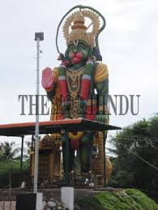
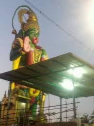
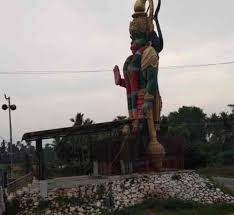
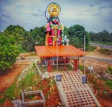
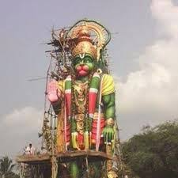
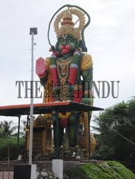
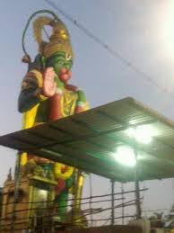
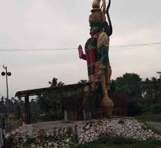
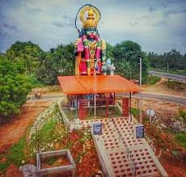
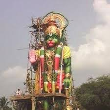

In the town of Pettavaithalai, located between Trichy and Karur
, there are two temples dedicated to Anjaneyar (Lord Hanuman). Since there is no single Wikipedia article for these specific temples, details about both are provided below. temple is situated in the Devasthanam area of Pettavaithalai, along the Trichy–Karur main road.While specific historical details are limited, the temple is known for its tall and majestic statue of Anjaneyar. The name "Karumbu" means sugarcane in Tamil, though the reason for its inclusion in the name is unclear from the search results. Devotees worship here for blessings from Lord Hanuman.
In the town of Pettavaithalai, located between Trichy and Karur, there are two temples dedicated to Anjaneyar (Lord Hanuman). Since there is no single Wikipedia article for these specific temples, details about both are provided below. temple is situated in the Devasthanam area of Pettavaithalai, along the Trichy–Karur main road.While specific historical details are limited, the temple is known for its tall and majestic statue of Anjaneyar. The name "Karumbu" means sugarcane in Tamil, though the reason for its inclusion in the name is unclear from the search results. Devotees worship here for blessings from Lord Hanuman.
 









The Karumbayee Amman Temple exemplifies traditional South Indian temple architecture, characterized by intricately carved stone pillars, ornate gopurams (towering gateways), and vibrant murals depicting scenes from Hindu mythology. The temple’s sanctum sanctorum houses the idol of Karumbayee Amman, adorned with exquisite decorations during festivals and special occasions.Culturally, the temple plays a pivotal role in the lives of the local community.
It is a hub for religious festivities, including annual celebrations like the Amman Thiruvizha, which feature vibrant processions, music, and dance, showcasing Tamil Nadu’s rich artistic traditions. These events not only enhance spiritual devotion but also foster a sense of unity and pride among the devotees.
The Karumbayee Amman Temple exemplifies traditional South Indian temple architecture, characterized by intricately carved stone pillars, ornate gopurams (towering gateways), and vibrant murals depicting scenes from Hindu mythology. The temple’s sanctum sanctorum houses the idol of Karumbayee Amman, adorned with exquisite decorations during festivals and special occasions.Culturally, the temple plays a pivotal role in the lives of the local community.
It is a hub for religious festivities, including annual celebrations like the Amman Thiruvizha, which feature vibrant processions, music, and dance, showcasing Tamil Nadu’s rich artistic traditions. These events not only enhance spiritual devotion but also foster a sense of unity and pride among the devotees.